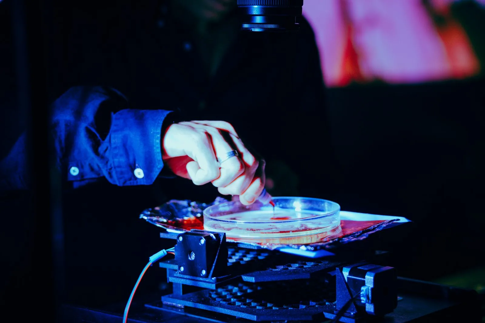
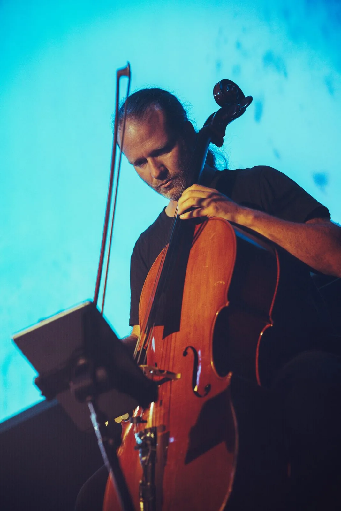
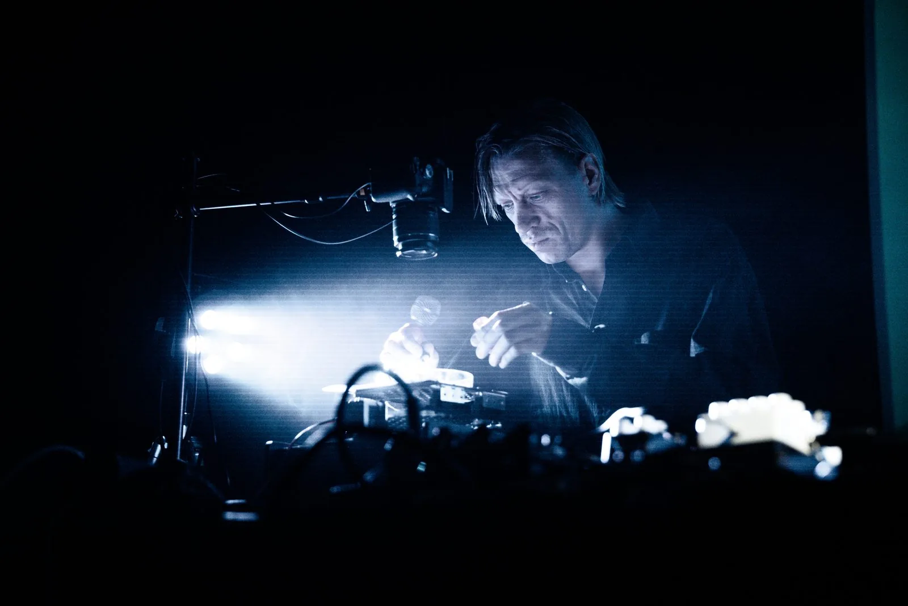
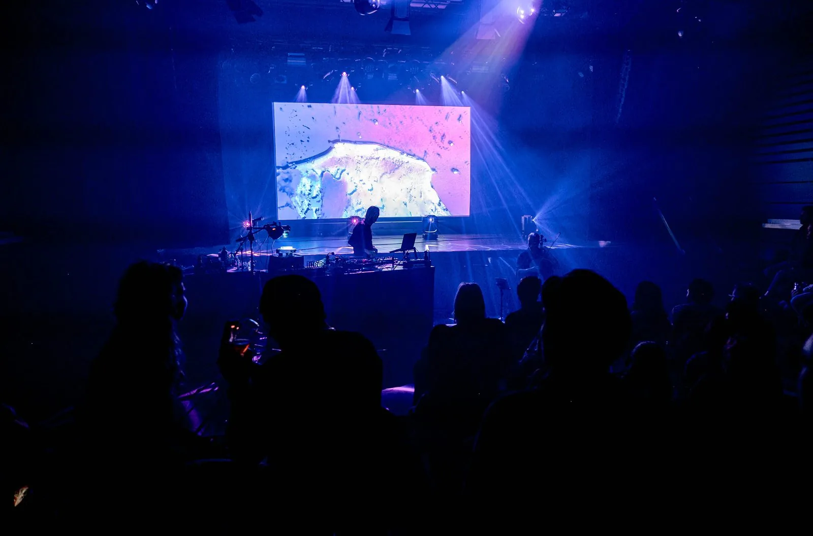
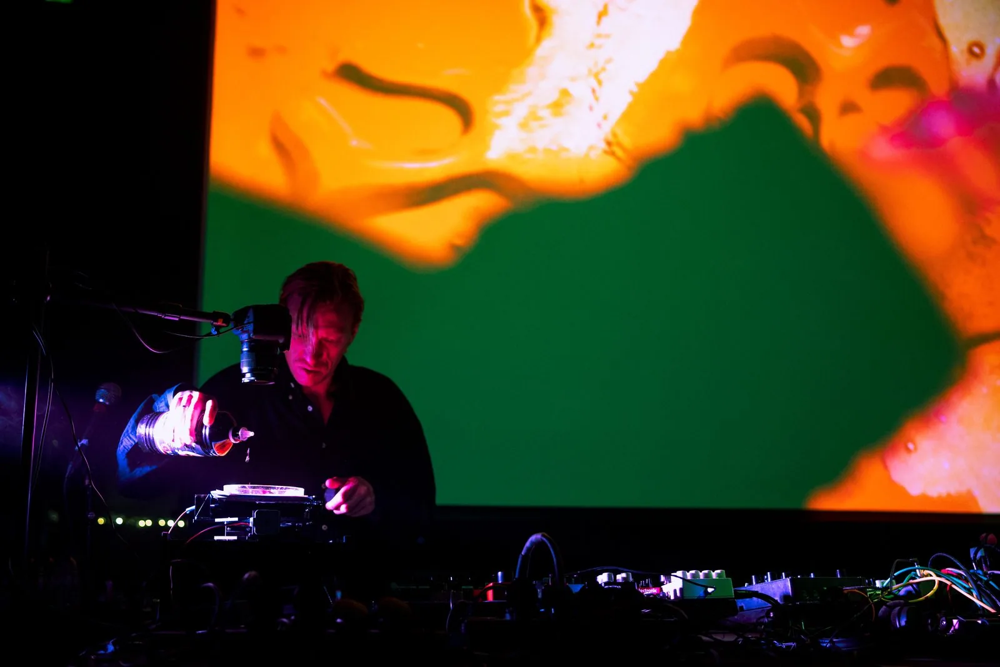
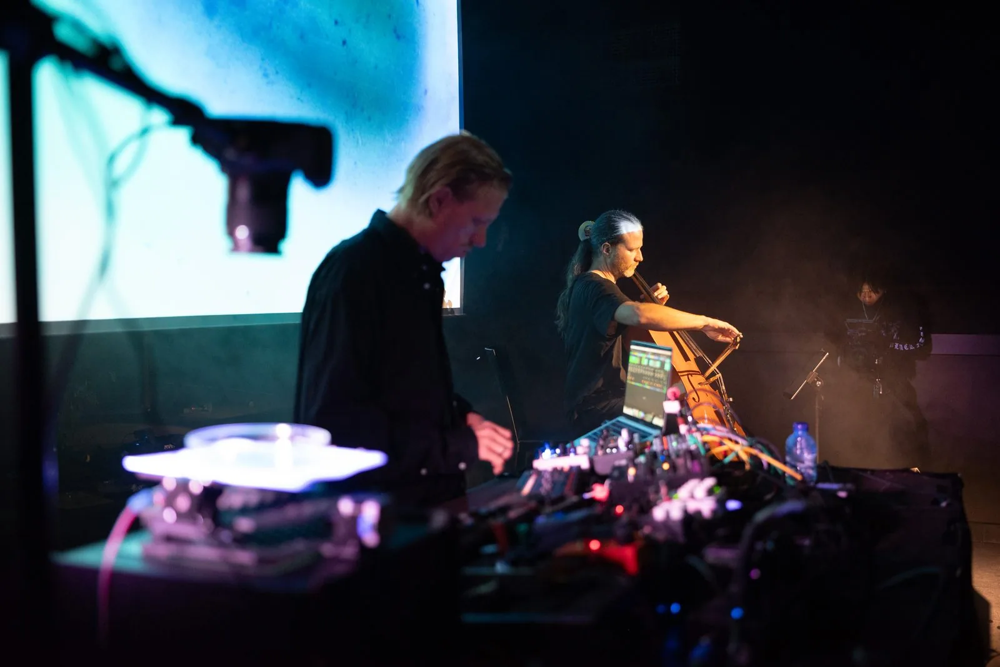
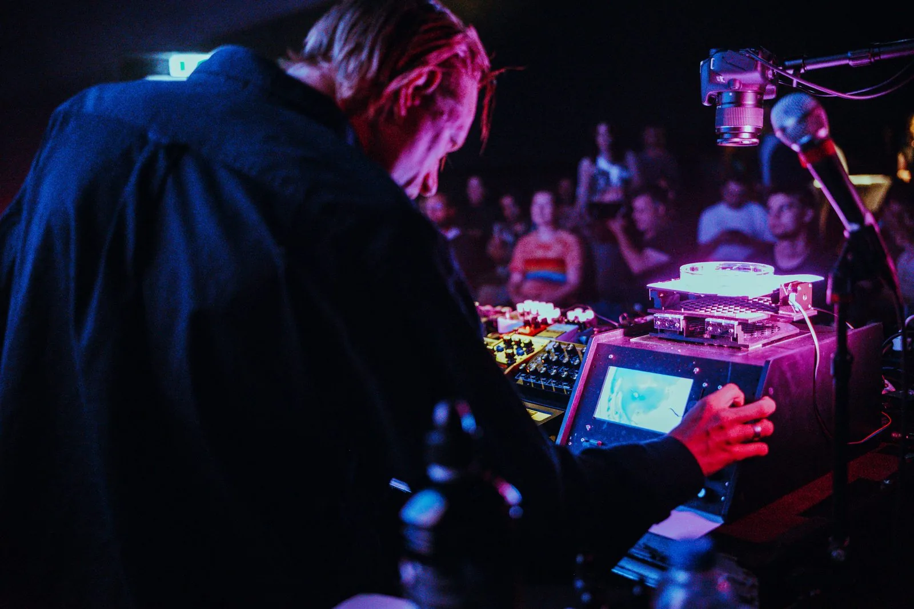

Ramses3000 op Hit The City
Zaterdag 29 augustus stond Ramses3000 op Hit The City in Eindhoven. Wat een vet optreden was dit.
De visuals komen live uit het video instrument dat ik voor hem bouwde. Vloeistoffen in een petrischaal, aangestuurd door motortjes die reageren op de muziek, en een camera die alles direct projecteert. Een moderne versie van de klassieke liquid light show.



Mooi om te zien hoe het instrument en de muziek samen één geheel worden op het podium.
3voor12 Lokaal was er ook bij en schreef er een festivalverslag over. Over de start van de zaterdag zeiden ze dit.
De dromerige soundscapes van Yannick Verhoeven, beter bekend als Ramses3000, blijken een uitstekende keuze voor wie het zaterdagprogramma van Hit the City ontspannen wil aftrappen.
Ramses speelde in PopEi nummers van zijn album Thalamus, dat hij in een klooster maakte, samen met cellist Jostijn Ligtvoet.




De foto's zijn gemaakt door Lisa Ooijevaar.